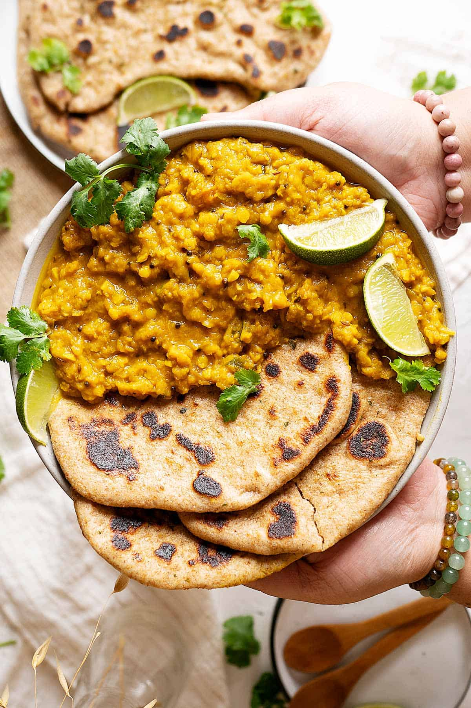

How to make delicious Dhal Curry!

We love our lentils, don't we? I mean, why wouldn't we?
They're super versatile to cook, a great protein source to have and they are
delicious! This easy lentil turmeric curry or some people call it dhal curry,
is just perfect if you're a beginner in curries or just want to consume lentils
in a different way.
Ingredients
- 1 ⅓ cup peeled split dried lentil 250g
- 3 cup water 750ml
- 1 cup water 250ml
- ½ lemon the juice
- 2 teaspoon brown sugar
- various spices
Steps
- Add all lentils ingredients into a pot and give it a quick mix. Bring to a gentle simmer and cook for 15-20 minutes or until the lentils are tender and a bit mushy. Set aside.
- Heat a casserole pan (or anything big enough to fit the lentils later) with some oil. Add all spices ingredients except for turmeric and cayenne pepper powder. Cook for a few minutes until the onion is golden brown.
- Now add in turmeric and cayenne pepper powders, give it a mix and cook for 1 minute.
- Finally add in our cooked lentils, together with the rest of the ingredients. Give it a good mix, adjust the seasonings and serve.